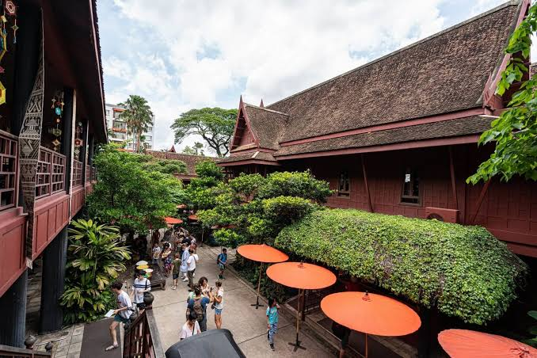
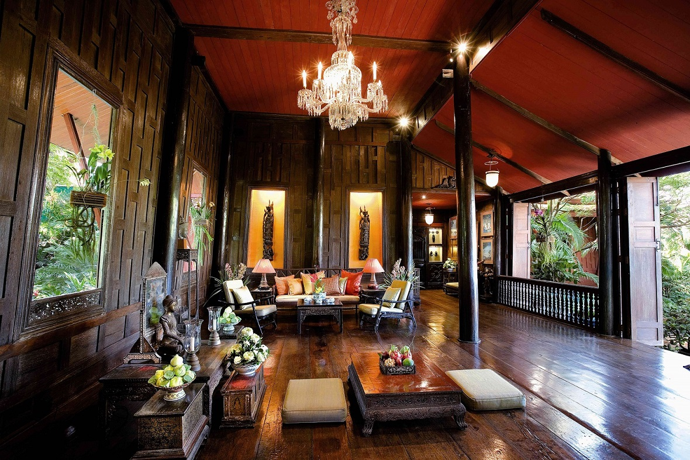
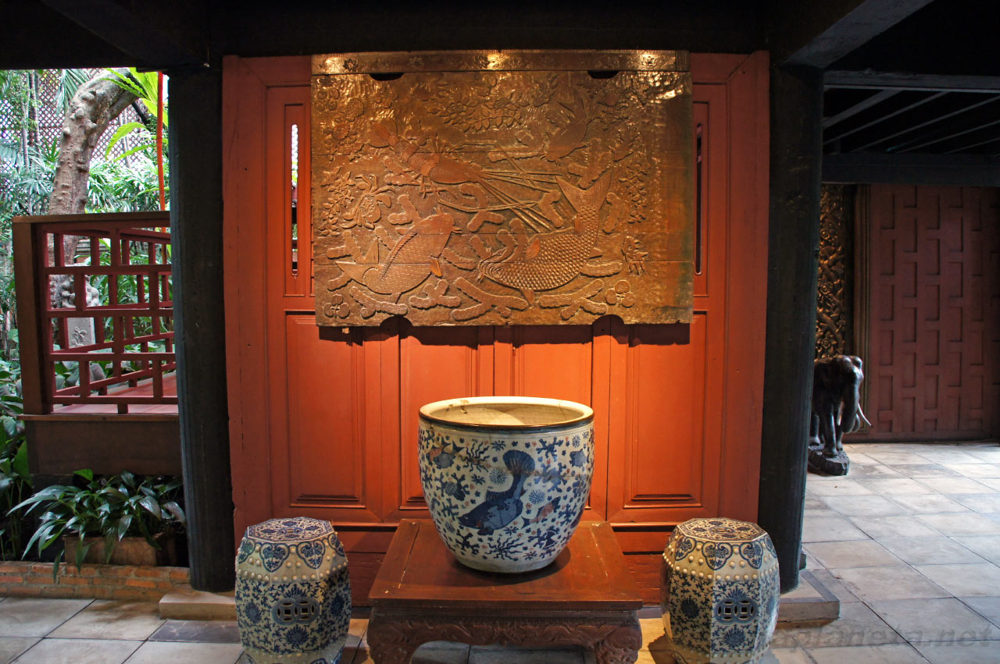
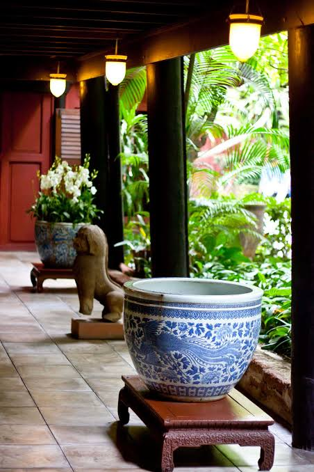
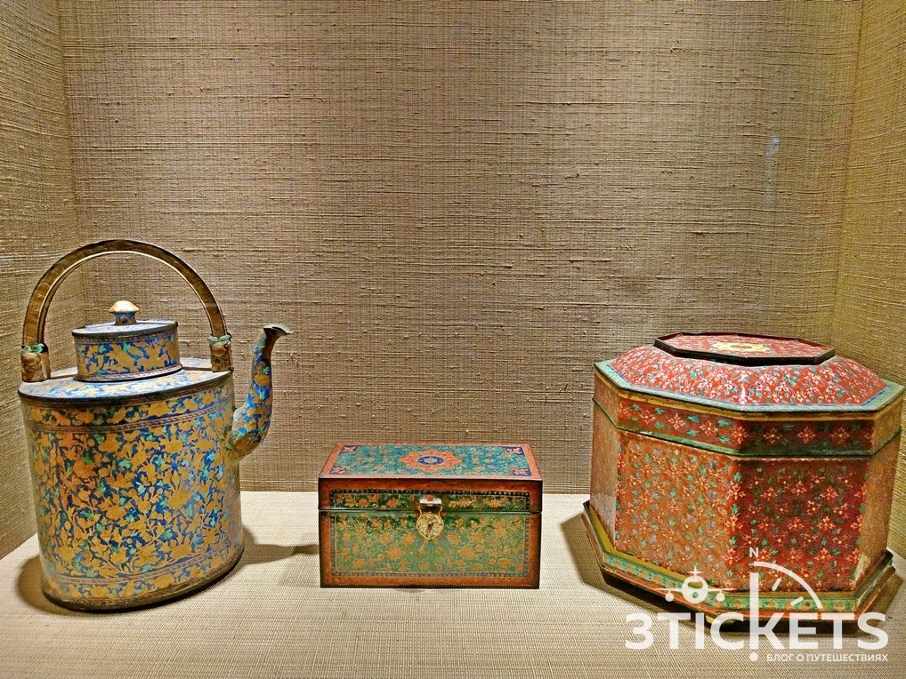
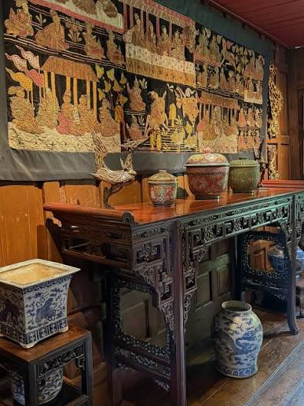
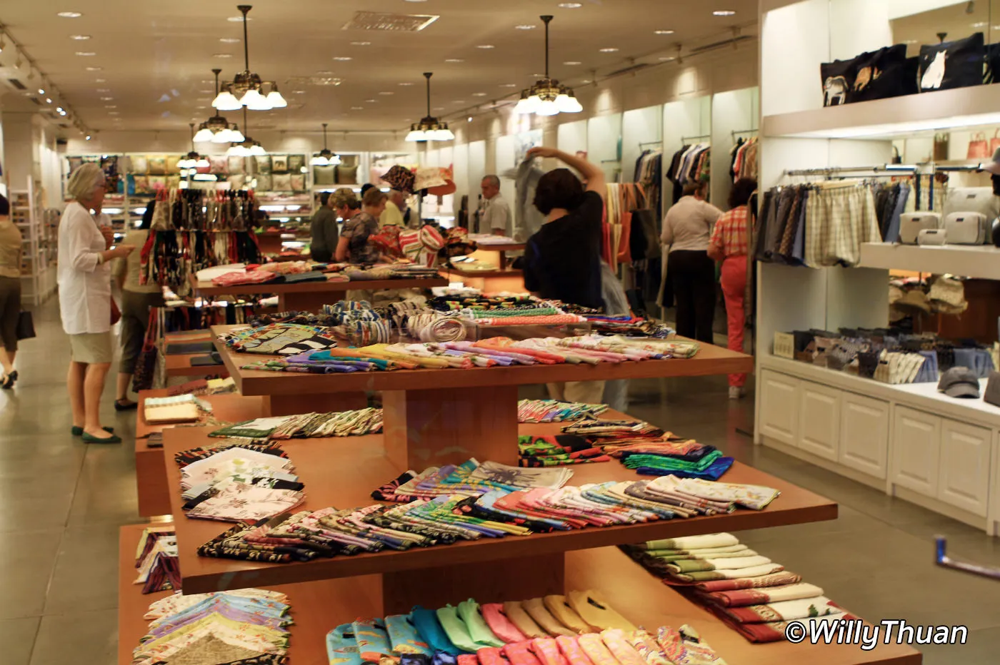
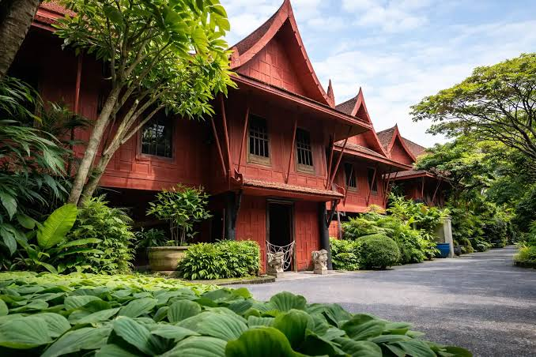

Дом Джима Томпсона — тайский дом и история знаменитого предпринимателя

Дом Джима Томпсона — исторический музей в центре Бангкока, посвящённый американскому предпринимателю Джеймсу Х. У. Томпсону, который сыграл огромную роль в возрождении тайской шёлковой промышленности.
Главная особенность музея — комплекс из шести традиционных тайских домов из тикового дерева, которые Томпсон собрал из разных частей Таиланда и объединил в одну резиденцию. Внутри дома находится большая коллекция юго-восточноазиатского искусства, буддийских скульптур, картин, фарфора и других предметов. Посещение проходит с гидом, который рассказывает об архитектуре дома, коллекции и необычной истории самого Джима Томпсона.
Где находится
Дом Джима Томпсона находится в центральной части Бангкока, в районе Pathum Wan.
Адрес: 6 Soi Kasemsan 2, Rama 1 Road, Wang Mai, Pathum Wan, Bangkok 10330, Thailand. Музей расположен рядом со станцией BTS National Stadium, поэтому добраться сюда достаточно легко. Неподалёку находятся торговые центры Siam и другие популярные места центрального Бангкока.
Стоимость посещения
Вход для взрослых стоит около 200 бат.
Для посетителей от 10 до 21 года действует сниженный тариф при наличии удостоверения личности, а дети младше 10 лет могут посещать музей бесплатно в сопровождении взрослого. В стоимость посещения входит экскурсия по историческому дому с гидом. Самостоятельно осматривать внутренние помещения дома нельзя.
Время работы
Дом Джима Томпсона работает ежедневно с 10:00 до 17:00.
Экскурсии проводятся в течение дня. Лучше приехать немного заранее, чтобы успеть приобрести билет и дождаться ближайшей группы. На полноценное посещение музея, сада и дополнительных пространств лучше выделить примерно 1,5–2 часа.
Как добраться
BTS
Самый удобный способ — воспользоваться наземным метро BTS.
Нужно доехать до станции National Stadium на линии Silom.
После выхода со станции нужно направиться к Soi Kasemsan 2.
Дом Джима Томпсона находится в конце переулка, примерно в нескольких минутах ходьбы от станции.
Это один из самых простых способов добраться до музея без пробок.
Такси или Grab
До музея можно также доехать на такси или воспользоваться приложением Grab. Однако район находится в центре Бангкока, где часто бывают пробки, поэтому BTS обычно является более предсказуемым вариантом.
Пешком от Siam
Если вы уже находитесь в районе Siam, до дома Джима Томпсона можно дойти пешком. Расстояние составляет примерно 15–20 минут в зависимости от места отправления.
Что посмотреть внутри
Дом Джима Томпсона — это не обычный музей с большими выставочными залами. Здесь сама резиденция является главным экспонатом, а коллекция органично размещена внутри традиционных тайских домов.
Шесть традиционных домов

Главная архитектурная особенность музея — комплекс из шести традиционных тайских домов из тикового дерева.
Большинство домов были разобраны в разных частях Таиланда, перевезены в Бангкок и собраны заново на территории будущего музея.
Томпсон стремился сохранить традиционную тайскую архитектуру, но при этом адаптировал дома под собственную жизнь и коллекцию произведений искусства.
Жилая часть дома

Внутри можно увидеть помещения, в которых Джим Томпсон жил и принимал гостей.
Комнаты сохранили большое количество оригинальных предметов интерьера, мебели и произведений искусства.
Экскурсия позволяет представить, как выглядела жизнь американского предпринимателя в Бангкоке середины XX века.
Коллекция азиатского искусства

Томпсон был большим коллекционером искусства и за годы жизни в Азии собрал большое количество исторических предметов.
В коллекции представлены буддийские скульптуры, тайские картины, китайский фарфор, керамика и произведения искусства из разных стран Юго-Восточной Азии.
Многие предметы происходят из Таиланда, Камбоджи, Бирмы и Лаоса.
Буддийские скульптуры

Одну из важных частей коллекции составляют изображения Будды и буддийские скульптуры.
Среди них встречаются произведения разных эпох и художественных школ.
Экскурсия помогает обратить внимание на различия в изображении Будды и особенностях искусства разных регионов Азии.
Китайский фарфор
 |
 |
В коллекции Джима Томпсона находится большое количество китайского фарфора.
Особенно интересны изделия с традиционным сине-белым оформлением, которые демонстрируют культурные и торговые связи между Китаем и Таиландом.
Фарфор использовался не только как предмет быта, но и как элемент декоративного оформления дома.
Тайский шёлк

История дома напрямую связана с тайским шёлком.
Джим Томпсон считается человеком, который помог сделать тайский шёлк известным далеко за пределами Таиланда. После Второй мировой войны он начал активно развивать производство и продвижение тайского шёлка на международном рынке.
Сегодня бренд Jim Thompson является одним из самых известных тайских брендов, связанных с шёлком и текстилем.
Тропический сад

Вокруг домов находится тропический сад с большим количеством растений, деревьев и небольших водоёмов.
Сад создаёт ощущение уединения, несмотря на то, что музей находится практически в центре Бангкока.
Прогулка по саду является важной частью посещения и позволяет увидеть архитектуру домов с разных сторон.
Канал Saen Saep
Дом расположен рядом с каналом Saen Saep.
Именно расположение возле канала было важной частью жизни Томпсона: на противоположной стороне находилась община Ban Krua, где жили ткачи, связанные с производством шёлка.
Сегодня канал помогает почувствовать атмосферу старого Бангкока и контраст между тихой территорией музея и современным городом вокруг неё.
История Джима Томпсона
Джеймс Х. У. Томпсон был американским архитектором и предпринимателем, который после Второй мировой войны переехал в Таиланд.
Он заинтересовался традиционным тайским шёлком и начал работать над его популяризацией за пределами страны. Благодаря его деятельности тайский шёлк получил международную известность. В 1959 году Томпсон завершил строительство своей резиденции из шести традиционных тайских домов. Он использовал её одновременно как дом, место для приёма гостей и пространство для своей коллекции искусства. В 1967 году Томпсон исчез во время прогулки в Малайзии. Несмотря на масштабные поиски, его так и не нашли. Его исчезновение остаётся одной из самых известных нераскрытых загадок Юго-Восточной Азии.
Что находится рядом
Дом Джима Томпсона расположен в районе Siam, поэтому после музея можно легко продолжить прогулку по современному центру Бангкока.
Siam
Siam — один из главных торговых и развлекательных районов Бангкока. Здесь находятся крупные торговые центры, рестораны, магазины и станции BTS.
MBK Center
MBK Center находится совсем недалеко от дома Джима Томпсона. Это огромный торговый центр, где можно найти одежду, электронику, сувениры и множество других товаров.
Маханакхон находится в другой части центрального Бангкока. После посещения дома Джима Томпсона можно отправиться туда, чтобы увидеть современный город с высоты.
Парк Люмпини находится южнее района Siam. После музея можно отправиться туда, если хочется немного отдохнуть от городской архитектуры.
Важное для туристов
Экскурсия по дому обязательна. Внутренние помещения нельзя самостоятельно осматривать без сопровождающего гида.
Внутри дома нельзя фотографировать. Фотографии разрешены на территории сада и во внешних пространствах, но внутри исторических зданий действуют ограничения.
Снимайте обувь перед входом в дом. Это часть правил посещения традиционного тайского жилого пространства.
Приезжайте заранее. Если ближайшая экскурсия уже заполнена, может потребоваться немного подождать следующую группу.
Не торопитесь после экскурсии. Сад и территория музея заслуживают отдельной прогулки.
Посещение удобно совместить с Siam. После музея можно отправиться в торговые центры, рестораны или продолжить прогулку по центральному Бангкоку.
Не путайте дом с обычным магазином Jim Thompson. Это именно исторический музей и бывшая резиденция предпринимателя.
Как лучше провести время в Доме Джима Томпсона
На посещение музея лучше выделить примерно полтора-два часа, после чего можно продолжить прогулку по району Siam.
Например:
- 10:00 — приезд к музею;
- 10:15 — покупка билета и ожидание экскурсии;
- 10:30 — экскурсия по историческому дому;
- 11:00 — осмотр коллекции и интерьеров;
- 11:30 — прогулка по тропическому саду;
- 12:00 — посещение музейного магазина;
- 12:30 — обед в районе Siam;
- 14:00 — прогулка по торговым центрам;
- 16:00 — поездка к другой достопримечательности Бангкока.
Такой маршрут позволяет совместить историю, искусство и традиционную архитектуру с современной жизнью центрального Бангкока.
Что запомнить
Дом Джима Томпсона — одно из лучших мест в Бангкоке для знакомства с традиционной тайской архитектурой и историей тайского шёлка. Здесь находятся шесть старинных домов из тикового дерева, большая коллекция азиатского искусства и красивый тропический сад. Особую атмосферу создаёт расположение рядом с каналом Saen Saep, прямо в центре современного Бангкока. История самого Джима Томпсона делает посещение ещё интереснее: американский предприниматель помог сделать тайский шёлк известным во всём мире, а его загадочное исчезновение в 1967 году до сих пор остаётся нераскрытым. Если Национальный музей показывает историю Таиланда через огромную коллекцию артефактов, то Дом Джима Томпсона позволяет буквально заглянуть в жизнь человека, который связал тайскую культуру, искусство и шёлк с остальным миром.